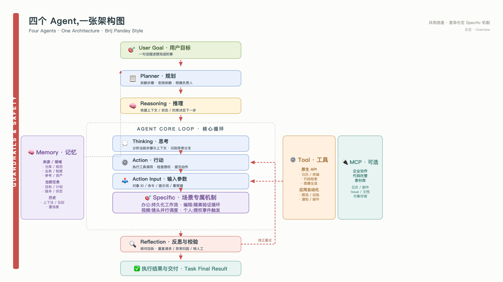
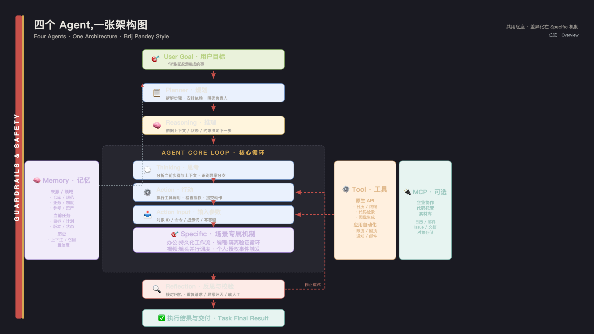
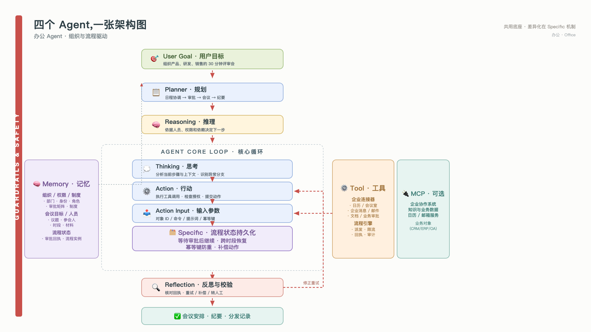
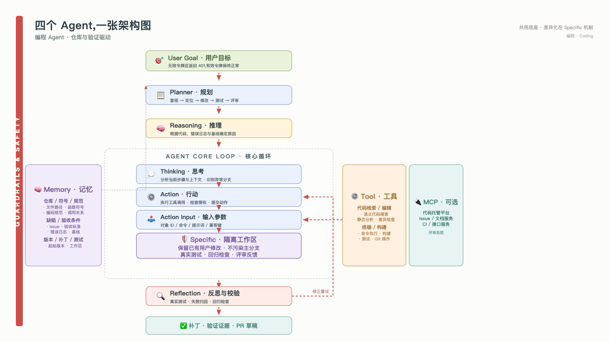
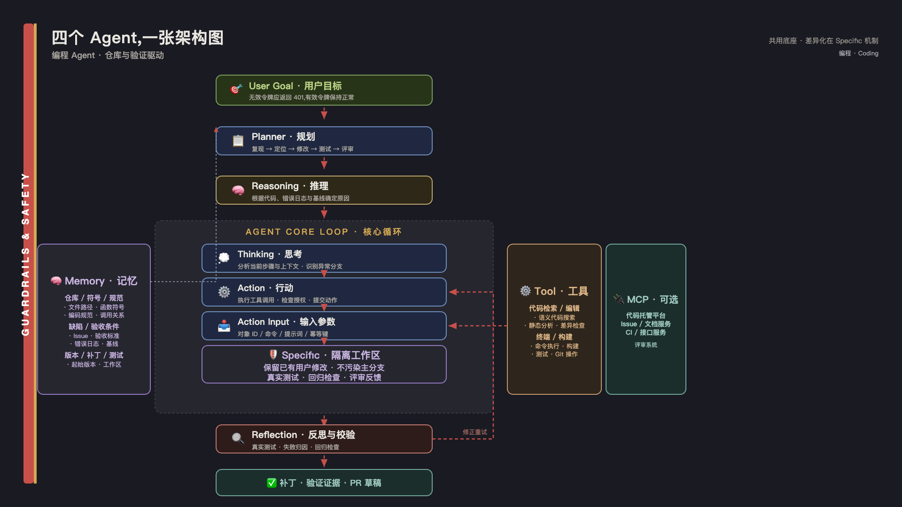
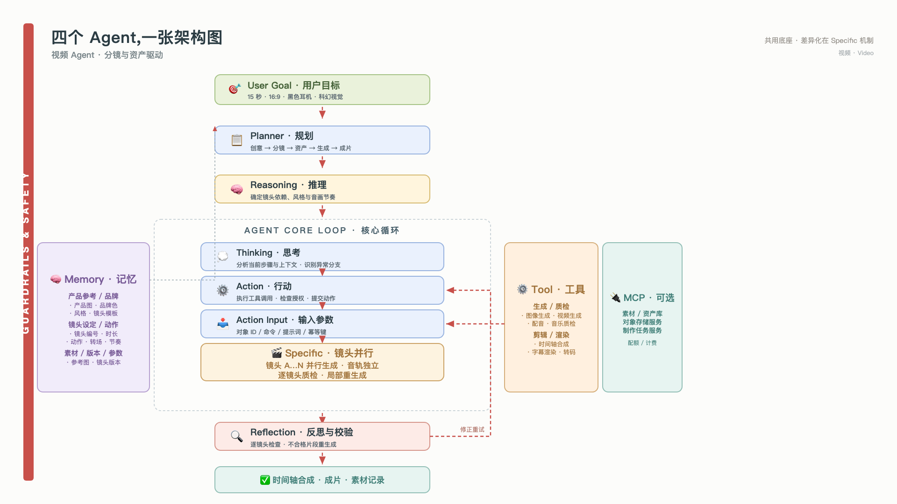
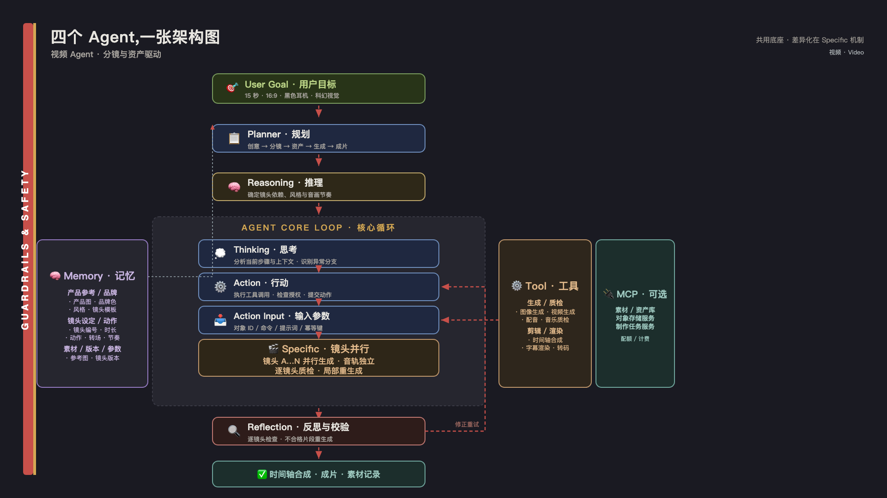
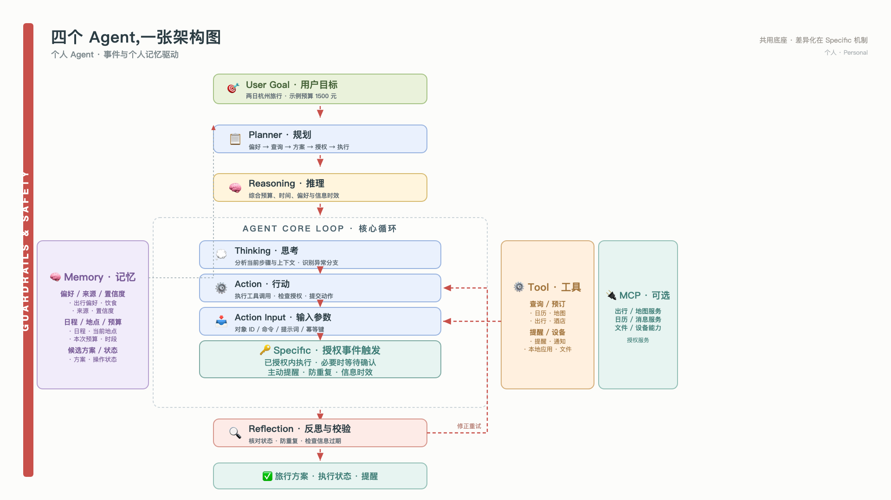
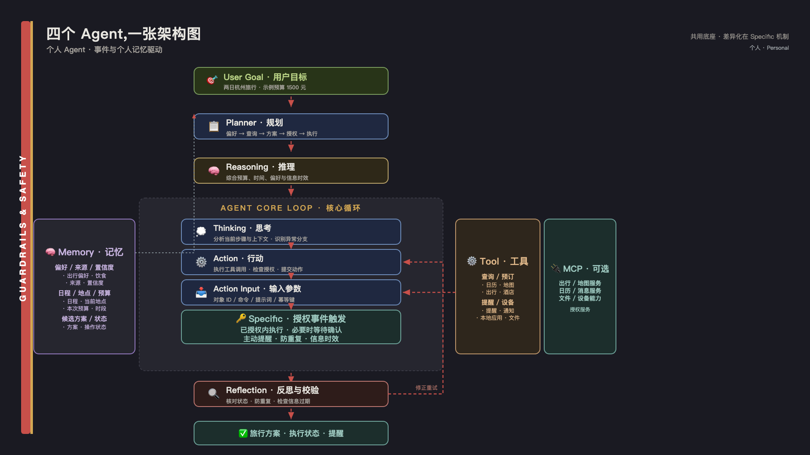

把办公 / 编程 / 视频 / 个人四类 Agent 收进同一张图。沿用 Brij Pandey 的视觉语法 —— 7 个核心模块 + 红色虚线流 + 左侧 Guardrails 侧条。模型、连接器、观测底座可以共用,差异化体现在控制机制、状态模型与失败处理上。









看图指南: 中央纵向主流程走 "目标 → 规划 → 推理 → 思考 / 行动 / 输入 → 反思 → 结果";左侧 Memory 提供上下文,右侧 Tool + MCP 提供执行;左侧红色条 = Guardrails & Safety 横切监督。中间那一行 Specific 机制才是四个 Agent 真正的区别。
主导机制:持久化业务工作流。状态对象 = 流程实例 / 审批 / 回执 / 责任人。失败处理:等待审批 · 核对回执 · 跨系统补偿。
主导机制:隔离修改与执行验证循环。状态对象 = 代码版本 / 工作区 / 补丁 / 测试证据。失败处理:修改 / 测试 / 归因 / 重修 / 评审反馈。
主导机制:镜头依赖图 + 异步任务调度。状态对象 = 镜头任务 / 素材版本 / 生成参数 / 时间轴。失败处理:生成 / 检查 / 局部重生成 / 成片验收。
主导机制:授权事件触发 + 个性化决策。状态对象 = 情境快照 / 授权 / 操作状态 / 记忆来源。失败处理:感知 / 规划 / 授权 / 核对 / 记忆更新。
共用底座,但场景专属架构不能省略。模型、连接器、观测、身份可以共用。差异化落在控制机制(状态模型 / 流程引擎 / 工作区 / 调度器 / 授权引擎)、状态对象(流程实例 / 代码版本 / 镜头任务 / 情境快照)与失败处理上。
第一阶段建设优先级:办公 = 一个 IM 入口 + 流程引擎 + 两个业务连接器,先把等待审批和幂等打通;编程 = 一个独立工作区 + 真实验证 + PR 草稿;视频 = 一个参考资产库 + 并行任务调度 + 镜头级重生成;个人 = 授权事件引擎 + 来源可信的记忆 + 主动提醒边界。
Guardrails & Safety 横切:权限继承 / 越权检索过滤 / 重复请求去重 / 产物证据链 / 人工升级阈值。五项必须在第一阶段就内置。